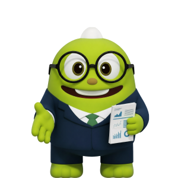

총 금액 120,000원
현금
120,000원
투자
추가
평균 수익률은 현재 보유 중인 투자 또는 연금의 평가 금액과 매입 금액을 비교하여 발생한 예상 손익을 가중평균한 전체 수익률입니다.
연금
0원
부채를 연결하시면 AI가 내 상황에 꼭 맞는 부채 관리법을 찾아드려요.
자산을 연결하고 맞춤 리포트를 완성하세요
AI가 제안하는 스마트한 포트폴리오를 확인해 보세요!
#AI#포트폴리오
계획적인 상환으로 대출을 슬림하게 관리해 보세요! 대출줄이기
